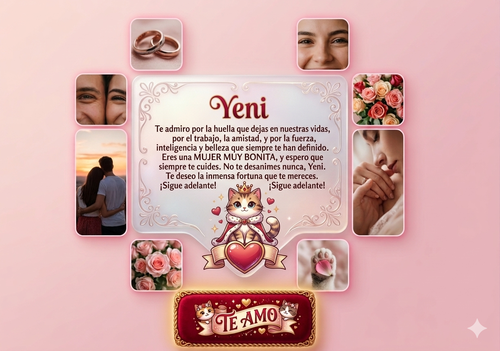

Yeni Celina:
Quisiera que te detengas un instante y veas todo lo que construiste, hasta donde llegaste, quizás por momentos pienses que no has llegado lejos, pero eso no es verdad, eres una mujer increíble. Te doy las gracias personalmente por la huella que dejas en nuestras vidas, gracias a ti he podido avanzar mucho en mi vida, por el trabajo que me das, por la amistad que me das, celebrar San Valentín no es celebrar sólo una fecha en el calendario, sino es celebrar la inmensa fortuna de tener a una chica tan extraordinaria en mi vida y de seguro en las demás.
Muchas veces te dije que admiraba la fuerza, la inteligencia y LA BELLEZA que tienes, aún te sigo admirando y créeme que siempre te admiraré, para mí eres una MUJER MUY BONITA, tu sonrisa, tu mirada, tu voz, tu cabello, todo es muy bonito de ti, espero que siempre te cuides.
Espero no te molestes, pero a veces pienso en ti, si estarás bien, si estarás comiendo, si tendrás cuidado en las cosas que haces, espero que todo en realidad te salga bien, que todos tus planes se cumplan, te mereces todo lo mejor del mundo.
Si en algún momento puedo volver a apoyarte, si es que así lo deseas, lo haré con mucho gusto.
Espero que jamás te vayas lejos, siempre deseo que sonrías, que disfrutes de las cosas que haces, que si en algún momento algo te sale mal, pues que te levantes y que sigas adelante, espero que nunca te rindas en las cosas que quieres hacer. Como te dije un par de veces, siempre tendrás la oportunidad de poder promover eventos donde te irá muy bien, no te desanimes nunca si??
ESPERO QUE SIEMPRE SEAS FELIZ, ES LO MEJOR QUE TE DESEO
Momentos Especiales 🌸

¡Feliz San Valentín! Eres la persona que le da luz a mis días.